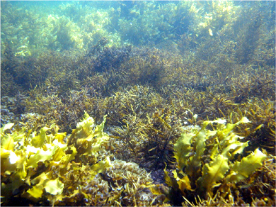

A function is a self contained chunk of code which performs a specified task. Think of them as “mini-scripts” that are written separately from your main script.
Well-written code uses lots of functions. This likely includes:
It’s hard to do anything in R without using some of the built-in functions, but have you written you’re own functions? If not, it’s time to start.
Below we spend some time outlining the two main types of function, why use functions, and then how they are constructed.
To illustrate our examples, we will use a sample data set containing a series of different measurements from replicated algal samples. You can read the data into R directly from the web:
library(tidyverse)
algae <- read_csv("Algal_traits.csv")(or if you like download the data set, Algal_traits.csv). Taking a look we see a bunch of variables like height, weight etc
## # A tibble: 60 × 8
## Location Type Species height length dryweight wetwet strength
## <chr> <chr> <chr> <dbl> <dbl> <dbl> <dbl> <chr>
## 1 w1 red.algae a 0.395 2.16 0.956 2.46 2.993355157
## 2 w1 red.algae a 0.0189 1.98 0.0655 1.96 2.756726384
## 3 w1 red.algae a 0.698 4.72 0.200 2.24 2.252360245
## 4 w1 red.algae a 0.139 2.00 0.467 1.53 2.310011661
## 5 w1 red.algae a 0.377 4.41 0.978 2.10 2.334597887
## 6 w2 red.algae a 0.0767 0.572 0.100 1.61 <NA>
## 7 w2 red.algae a 0.933 0.839 0.564 1.75 2.472866529
## 8 w2 red.algae a 0.0617 4.62 0.252 1.72 2.635546813
## 9 w2 red.algae a 0.991 4.08 0.254 1.71 2.521458416
## 10 w2 red.algae a 0.314 2.13 0.125 2.14 2.580392619
## # … with 50 more rowsBroadly, there are two main types of function:
First are functions that do something and return an object. These functions take some specified inputs, do some manipulations / operations, then return an object back to you. Examples include mean() (takes mean of a vector), lm() (fits a linear model), or read.csv (loads a table of data).
Second are functions that have some external effect on your computer or working environment. These functions do something but don’t return any objects. Examples include things like write.csv() (writes a file to disk), plot() (makes a plot), library() (loads a package).
For the first type, you’ll often save the output in a variable and manipulate it further. For example, let’s say we want to calculate the average of the variable height of the samples in the algae data. We can use the function mean:
mean_height <- mean(algae$height)This code takes the mean of algae$height and stores it in the variable mean_height. We can query the answer by running the variable name:
mean_height## [1] 0.4590399We can also run the function without assigning the output to a variable. The output is still returned, this time to the console - after which it is printed and lost.
mean(algae$height)## [1] 0.4590399By contrast, output from the second type of function does not need to be assigned to a variable. Moreover, the function doesn’t print anything to screen either. E.g.
write.csv(Algae, "data.csv")So why is it so useful to divide your script into many separate, but cooperating, functions? Why not write one big, long script? There are multiple ways in which writing functions can improve your coding.
Writing functions is a good way of organising your analytical methods into self contained chunks. Generally, code written in this way is much easier to read.
Consider some of the functions that you have already used within R. For example, mean().
This function is already predefined within the R base package, meaning that you didn’t have to tell the computer how to compute the mean, and because that programming job has already been done, you can simply use the function in your own script. Imagine if every time you needed a mean you had to write the following:
sum(x) / length(x)Even this line of script uses two functions: the sum function and length function. If these weren’t available, you would need to write out the full method every time you needed a mean.
(x[1] + x[2] + x[3] + x[4] + x[5]) / 5 Instead, we simply use mean without giving it two thoughts.
Importantly, it is much easier to tell what mean(x) is doing than the line above. Reading the code you know exactly what is happening. Using the full formula, it would be less obvious what was happening every time you wanted to calculate the mean of a different variable.
Which raises an important point: functions should have a clear and informative name, that tells you what the function does.
Functions quickly increase the ease of which you can read and interpret the code.
It is not obvious what the code sqrt(var(algae$height)/length(algae$height)) what this is doing, whereas it is immediately obvious what the code standard_error(x) is doing.
Building on the idea of making code easier to read, functions can help organise your whole workflow and make it easier to follow. Often people have a big long analysis script, which is difficult to interpret. When you use functions, your analysis script might end up looking much simpler:
data <- read_csv("Algal_traits.csv")
stats_species <- fit_model_species(data)
stats_spatial <- fit_model_spatial(data)
make_plot_species(stats_species)
make_plot_spatial(stats_spatial)
save_output(stats_species)Here all the functions like fit_model_species are ones that you’ve written yourself.
Wow, how much easier is that to engage with, than some long script with 100’s of lines?

Not only is using the mean function more informative (its easier to tell what your line of code is doing) it’s also reusable. Once a function is defined it can be used over and over again, not only within the same script but within other scripts too.
To further highlight this, we will go through an example of writing our own function to calculate the standard error of a bunch of variables. R has built in functions for the mean of a vector (mean(x)) and standard deviation (sd(x)) but not the standard error. To calculate standard error,
\[SE_\bar{x}= \sqrt{\frac{var}{n}}\]
we need the variance and sample size, n. These are relatively easy to calculate using other base functions in R. var will calculate the variance and length gives the length of the vector and thus the sample size (n).
Let’s say we first wanted the mean and standard error of height. This is given by
sqrt(var(algae$height) / length(algae$height))## [1] 0.04067788Imagine now that you wanted to calculate these same statistics on a different variable (e.g., dry weight). When faced with wanting to use this piece of code twice, we may be tempted to just copy-and-paste it to a new place, thus having two copies of the above snippet in our code. However, a much more elegant (and benifitial in the long-term) approach is to make it into a function and call that function twice.
If we first define a function for standard error:
standard_error <- function (x){
sqrt(var(x) / length(x))
}we simply use standard_error like we would any other function.
standard_error(algae$height)## [1] 0.04067788standard_error(algae$dryweight)## [1] 0.02190001Wrapping code into functions reduces the chance of making inadvertent errors. Such errors may not cause your code to crash, but may cause the results to be wrong. These types of mistakes are the hardest to find and can render our results meaningless.
There are at least two ways functions reduce the chance of errors.
First, copy and paste leads to errors. Without a function, you may copy and past code all over the place. For example, if I wanted to calcualte the standard error of a bunch of variables (without using our new standard_error function)
sqrt(var(algae$height) / length(algae$height))## [1] 0.04067788sqrt(var(algae$dryweight) / length(algae$dryweight))## [1] 0.02190001sqrt(var(algae$length) / length(algae$dryweight))## [1] 0.1824489Did you notice the mistake? I forgot to change the second variable on the third line!!!!! The code will run but give the wrong results. This is less likely if we write:
standard_error(algae$height)## [1] 0.04067788standard_error(algae$dryweight)## [1] 0.02190001standard_error(algae$length)## [1] 0.1824489Second, functions limit the scope of variables and enforce cleanup. When calculating something, it’s common to create new variables. As an example, Let’s say we calculated standard error as follows
var_x <- var(algae$height)
n <- length(algae$height)
sqrt( var_x / n )## [1] 0.04067788Note you now have two new objects in your environment: var_x and n:
var_x## [1] 0.0992814n## [1] 60You can get rid of them by running:
rm(var_x, n)(the function rm() “removes”, i.e. deletes, objects from the environment).
But what if you forget? There’s a real danger that later you accidentally reuse the variable n or var_x, thinking they’re something that they’re not. And if they have non-specific names like n the risk of this happening is high.
If instead you put the code above into a function, as follows, this danger disappears.
standard_error <- function (x){
var_x <- var(algae$height)
n <- length(algae$height)
sqrt( var_x / n )
}When you run:
standard_error(algae$height)## [1] 0.04067788The result is returned but variables var_x and n are nowhere to be seen. That’s because they were automatically cleaned up when the function exited.
Any variables created within a function get automatically cleaned up at the end of the function. So using functions leaves us with a nice clean workspace. Moreover, the environment within the function is much safer than the global env, because we’re less likely to grab random variables from elsewhere.
The best way to solve big complex problems is to divide it into a series of smaller problems. It’s well known that our brains cannot cope with more than about 5-10 bits of information at any one time.
Writing functions allows us to identify a series of smaller problems and solve these one by one, using all of our cognitive power.
When I look at the function standard_error as defined above, I can think about the operations being performed (addition, division, square root)in isolation from the broader problem I’m solving (studying algae).
As a general rule, a good function does one thing well. If that one thing is complicated, it be made up a bunch smaller functions (i.e. steps), each doing one thing well.
Now let’s look more closely at the mechanics of writing a function.
A function definition has the following form:
function_name <- function (arg1, arg2, ...){
statements # do useful stuff
object # return something
}function_name: The function’s name. Can be any valid text without a space, but you should avoid using names that are used elsewhere in R. Check to see if your name is already used as a keyword by asking for the help page ?function_name (no 100% guarantee, but a good check). Also, aim for names that describe what the function does. A long name like calculate_standard_error is much better than something short and unintuitive like f.
arg1, arg2, …: The arguments of the function. You can write a function with any number of arguments, with those being any R objects (numeric, strings, characters, data.frames, matrices, other functions).
function body: The code between the {} is the function body and run every time the function is called. This is the code that is doing all the useful stuff and is called the function body.
return value: The last line of code is the object to be returned. Some times you’ll see people write return(object), though it’s enough to write object.
Using this format, a function to calculate the standard error of the values in the object x would be:
standard_error <- function (x) {
sqrt(var(x) / length(x))
}To be able to use the function, you need to run that code into your console. Once defined we can call the function like we would any other function.
standard_error(algae$height)## [1] 0.04067788Let’s take a closer look at the function mean. Typing ?mean into the console brings up the relevant “help” details. Note the structure
mean(x, trim = 0, na.rm = FALSE, ...)The first argument x is our vector of numbers. To use the function we need to specify something for x, e.g.
mean(x=algae$height)or just
mean(algae$height)The first version makes it explicit that the values in algae$height outside of the function are passed to the variable x within the function. The second version does the same thing, but less explictly. It works because R takes the values of height and maps it onto the first unnamed argument in our function call onto the first unnamed argument in the function definition. So the following will also work:
mean(na.rm=TRUE, x=algae$height)
mean(na.rm=TRUE, algae$height)But what are those are other arguments in the function definition: trim and na.rm? These are optional arguments, with default values set as specified. The function needs a value to run but unless you specify it, it will use the default.
Try running the mean() function on the strength variable.
mean(algae$strength)## Warning in mean.default(algae$strength): argument is not numeric or logical:
## returning NA## [1] NANotice we get NA, this is because by default the function doesn’t know how to deal with missing values (NA is a missing value) and there is one in that column of the data. How you deal with missing values is highly dependent on what you are trying to calculate (see the help module on importing data), but in this case, we’re happy remove NAs before calculating the mean. This can be achieved by setting the argument for na.rm to TRUE:
mean(algae$strength, na.rm=TRUE)## Warning in mean.default(algae$strength, na.rm = TRUE): argument is not numeric
## or logical: returning NA## [1] NAThe functions mean, var, sd, sum all behave similarly. Without specifying the argument, the functions all use their default value, which in this case is na.rm=FALSE. So these give the same result
mean(algae$strength)## Warning in mean.default(algae$strength): argument is not numeric or logical:
## returning NA## [1] NAmean(algae$strength, na.rm=FALSE)## Warning in mean.default(algae$strength, na.rm = FALSE): argument is not numeric
## or logical: returning NA## [1] NABut, we can override this if that’s what we want:
mean(algae$strength, na.rm=TRUE)## Warning in mean.default(algae$strength, na.rm = TRUE): argument is not numeric
## or logical: returning NA## [1] NAYou’ll notice that many functions have arguments with default values set.
Going back to our new function standard_error, let’s add a new argument na.rm so that it behaves like mean and the other function listed above:
standard_error <- function (x, na.rm=FALSE){
sqrt(var(x, na.rm = na.rm) / sum(!is.na(x)))
}Like the other functions, we’ve set the default behaviour of na.rm to FALSE.
Now, let’s try out our new function on the strength variable with missing data, alternating na.rm = TRUE and na.rm = FALSE.
standard_error(algae$strength)## Warning in var(x, na.rm = na.rm): NAs introduced by coercion## [1] NAstandard_error(algae$strength, na.rm = FALSE)## Warning in var(x, na.rm = na.rm): NAs introduced by coercion## [1] NAstandard_error(algae$strength, na.rm = TRUE)## Warning in var(x, na.rm = na.rm): NAs introduced by coercion## [1] 0.03870419Within the function the value for na.rm that is received by the function is passed into the var function. The var function already has a na.rm argument already built within it (see help file ?var), but length does not. We can use the code function sum(!is.na(x) to calculate n. The function is.na will test each value of the vector, x, to see if it is missing. If it not missing (the ! means NOT), then it returns a TRUE for that position, and by counting the values returned as TRUE with sum, we are effectively counting only values that are not missing.
Let’s say you have a script where you continually want to set na.rm=TRUE and get sick of typing this everywhere:
standard_error(algae$height, na.rm = TRUE)
standard_error(algae$strength, na.rm = TRUE)
...(Besides, we’re also repeating ourselves a lot and so increasing the risk of errors – what if we forget?)
One approach here is to define a new function that builds of our previous function but with the desired behaviour. E.g.
standard_error_narm <- function (x){
standard_error(x, na.rm=TRUE)
}We can now call the new function and the the same result as the above specifying na.rm=TRUE
standard_error_narm(algae$strength)## Warning in var(x, na.rm = na.rm): NAs introduced by coercion## [1] 0.03870419While the example with standard_error is perhaps a bit trivial, you can take this approach all over the place. For example, a function that makes a style of plot with defaults set just the way you like them.
... argument for?Notice the argument ... in the definition of the mean function above? What’s that about? The ..., or ellipsis, element in the function definition allows for other arguments to be passed into the function, and passed onto to another function within the function being called, without having to write them all out by name. For example, in the definition of the function standard_error_narm we could instead write
standard_error_narm <- function (...){
standard_error(..., na.rm=TRUE)
}When you call standard_error_narm defined like this, anything other than na.rm will be passed directly into the next function. This avoids repeating the arguments of one function when defining another.
A less trivial example is using plot. I could write a function setting changing some of defaults for plot, so that I don’t have to keep repeating these.
my_plot <- function (...){
plot(..., pch=16, las=1, log="xy")
}Before you are finished, there is one last thing to do. It is a good idea to add comments your function, as this will save you from a world of pain when you go back to fix something later on. Function comments should contain, a brief description of the function (one sentence), a list of function arguments with a description of each (including data type) and a description of the return value. Function comments should be written immediately above or below the function definition line.
standard_error <- function (x, na.rm){
# Computes the sample standard error
#
# Args:
# x: Vector whose standard error is to be calculated. x must have length greater than one.
# y: na.rm can either be T or F. T removes missing values before calculating standard error.
#
# Return:
# The standard error of x
sqrt(var(x, na.rm = na.rm) / sum(!is.na(x)))
}Another common way to annotate functions is using the roxygen2 syntax.
Once you get into the habit of writing functions it’s a good idea to keep them in a separate file containing your functions together. Why? Because otherwise you have these big clunky files clogging up your script. If you’ve solved the problem of how to do something, why not stuff it away somewhere you can go, but only if needed.
To get get your functions out of the way, we recommend keeping all the functions for each project together in a folder called R within your project directory. (For more on project set up see our post on project management.)
To make these functions accessible within your workflow, you then use the function source to read the function files into memory, e.g.
source("R/stats.R")Often, you may have a series of files
source("R/data_cleaning.R")
source("R/stats.R")
source("R/plots.R")It’s a matter of preference whether you use a single or multiple files.
%>%For many of us, pipes have become an essential part of our workflow. (If this is foreign to you, see our post using pipes under data manipulation).
Importantly, you can write functions that work with the pipe operator. All you need to do is setup your so that the first argument is the object being piped into the function. In fact, our standard_error already works with pipes, assuming you are passing in x:
algae$height %>% standard_error()## [1] 0.04067788The examples above all return a single item. What if I want to return multiple items from a function? The answer is to return a list object. Lists are helpful because you can bundle together many different items.
For example, we could write a function that returns several statistics of a variable:
summary_stats <- function(x, na.rm = TRUE) {
list(mean = mean(x, na.rm=na.rm),
var = var(x, na.rm=na.rm),
n = sum(!is.na(x))
)
}If we run this function, we receive an object that has named elements:
height_stats <- summary_stats(algae$height)
names(height_stats)## [1] "mean" "var" "n"height_stats$mean## [1] 0.4590399height_stats$var## [1] 0.0992814height_stats$n## [1] 60In fact many functions do this, e.g. lm() (for fitting a linear model). Fitting a model we can check it’s a list, then ask for a name of the returned elements, and start calling them by name:
fit <- lm(algae$height ~ algae$dryweight)
is.list(fit)## [1] TRUEnames(fit)## [1] "coefficients" "residuals" "effects" "rank"
## [5] "fitted.values" "assign" "qr" "df.residual"
## [9] "xlevels" "call" "terms" "model"fit$coefficients## (Intercept) algae$dryweight
## 0.4054402 0.1276447Finally, let’s recap a few pointers on what makes a good function.
It’s short
Ideally each function does one thing well. Often this means lots of short functions. Short functions are extremely useful. Even if the code in the function body is more complex, ideally it still does one thing well.
It does one thing well It has an intuitive name
You can find more help on functions at
Author: Original by Keryn F Bain; revised and substantially expanded by Daniel S Falster
Last updated:
## [1] "Tue Jan 25 09:37:39 2022"